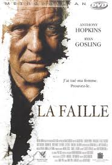
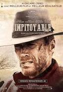

Après avoir porté le costume et l'uniforme, aujourd'hui je me réoriente vers un look plus cool dans le numérique.
See Lewagon
Le pianisteDurant la Seconde Guerre mondiale, Wladyslaw Szpilman, un célèbre pianiste juif polonais, échappe à la déportation mais se retrouve parqué dans le ghetto de Varsovie dont il partage les souffrances, les humiliations et les luttes héroïques. Il parvient à s'en échapper et se réfugie dans les ruines de la capitale. Un officier allemand, qui apprécie sa musique, l'aide et lui permet de survivre. | ||
|  |
La failleLorsque Ted Crawford découvre que sa jeune épouse le trompe, il décide de la tuer... mais en mettant au point le crime parfait. Alors que la police arrive sur les lieux du drame, l'inspecteur Rob Nunally a deux surprises : la victime n'est pas morte, et c'est la femme avec laquelle il avait une liaison.. | |
|  |
ImpitoyableKansas 1880. William Munny, redoutable hors-la-loi reconverti dans l'élevage va, à la demande d'un jeune tueur, reprendre du service pour venger une prostituée défigurée par un cow-boy sadique. |